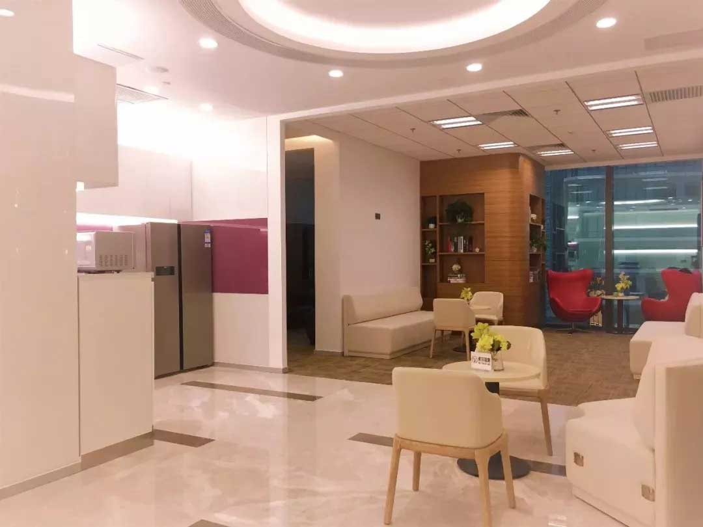

联合办公空间内住着一群什么样的人？
2018-01-19
他们有商业头脑
把钱花在刀刃上
在写字楼里租个单独办公场地，非常烧钱，大城市尤甚。除了场地的费用以外，装修、家具、办公设备、各种设施、办公用品、电话、商务光纤、饮品等等完整一套下来价格不菲。
一个联合办公空间可以解决这些问题，联合办公空间按照工位收费，一旦交了工位费成为会员，你就可以免费使用所有的公共设施。

几个人的团队甚至一个自由职业者，却可以享受几百人团队的办公场地，选择联合办公的企业们深谙此道。
他们选择联合办公空间，节省了购买打印机等办公设备的成本，更不需要操心设备维修/折旧的问题，在不降低办公品质的同时增强空间使用的效率，相当于以最高的性价比享受最优质的办公环境。
同时，还解决了在装修新的办公场地的时间成本及机会成本。今天申请成为了会员，明天就可以拥有属于自己的办公桌。
他们眼界开阔，
考虑长远
联合办公空间能够提供的产品和服务非常丰富，但是其中有一项福利很难被量化，那就是灵活度。联合办公对于快速发展中的公司来说，当公司员工增加的时候，它们并不需要重新寻找更大的办公场地然后重新装修，只需要再增加相应工位的会员即可。
灵活性的另一个维度就是租期合同，写字楼通常需要租户签下三至五年的合同，支付方法押二付三，成为一笔不小的经济负担。而联合办公可以满足企业在扩张时的流动性和对灵活租约的要求，让企业在有保障、且无需大范围地改变组织架构的情况下尝试新的变化。
因此，那些预见到自己会快速发展的企业通常更喜欢选择联合办公空间。
他们追求美和精致
且热爱生活
有这么一类人，他们更喜欢精致、充满活力的办公环境，更加追求灵活的工作时间、优先考虑自身发展、注重工作和生活平衡等，传统的办公环境已无法满足他们的需求，联合办公无疑就成了最佳选择。
联合办公空间的开放式办公区、独立办公区、咖啡厅、展厅、报告厅、电话亭、会议厅、健身房、休息区、良好的网络、便捷的电路系统等组成舒适和充满创意的工作环境。
从身体层面来说，联合办公空间能提供满足人体工学的产品，给予员工腰背部很好的承托，有效维持身体的活力。
从心理层面来说，联合办公空间能更好地支持并促进人们互动交流，更流畅地分享信息，帮助员工减小“负面”的压力，让大脑能有精力去从事创意工作。
联合办公那些时尚、舒适、有品质充满创意的家具及装修风格深得爱美人士的喜爱，这些入驻会员不愿日复一日重复蝼蚁般的生活，他们认为，工作不该只是为了填补人类生命长河中日复一日无聊中的空白。他们是非常需要意义的群体，会不断尝试着做自己的生活意义体验设计师。
他们在专注高效做好手头的事情之外，会花一部分时间做各种尝试、体验。参与别人平常觉得没时间没心力去的各类型活动，发掘兴趣、找寻自己能够投入热情的方向，以更好地融合工作和生活，实现他们的共赢。
他们追求先进
善于接受新鲜事物
用惯了智能手机，你就再也不习惯功能机；用惯了4G网络，你就再也受不了2G的速度。每天接受大量不同层面，不同领域的信息后，无论是在信息的深度还是广度方面，人的思维都可以得到进化，体现在脑容量更大，思维更清晰。
把办公桌之间的隔板拿掉，高质量的联结就更有可能发生：工作中短期的积极互动关系，它能使同事/上下级之间体验到活力；来自他人的关爱、尊重与照顾，例如一句充满精神气的“早安!”；而联合办公做的还不止这些，共享办公区直接敲掉了阻隔公司与公司间的高墙，让他们打开大门，走出办公室。
一览无余的环境下，很容易被边上全身心投入工作的友邻的氛围所感染。
《哈佛商业评论》一项研究表明，比起传统办公室，联合办公空间员工的职业成长速度显得更快。
任何一次与他人的积极交往都可能潜在地成为高质量的联结。一次交谈或互动都能赋予他们更强的行动力。
有入住联合办公的会员说，成为空间一员我的工作能力和专业技术得到了显著提升，因为你周围的人是如此优秀，你不得不成长。
他们尊重人才
赋予员工自主性
移动式科技正在改变着员工办公方式的偏好。这说明企业需要准备更灵活、更多的办公环境组合去配合员工新的喜好。
联合办公空间的特点能吸引更多的人才聚集，其灵活的开放制度让员工在工作时间的选择上更自由。你可以任意挑选工作的时段，随时切换工作/生活的频道；人性化的空间设计让你既可以选择在公共空间里高谈论阔，也可以在私人专属领域内默默耕耘。
一些传统的企业老板表示，他们并不愿意看到自己的员工坐在咖啡厅里喝咖啡，在上班时间高谈阔论。而那些尊重人才，能赋予员工充分自主性的公司则敢于去选择联合办公空间，因为知道他的员工不会让自己失望。
选择联合办公的企业或个人，他们不会，也没有机会躲在某个封闭的角落打游戏或者看剧。
他们专业、专注
习惯抓重点
为了让入驻企业全身心从事公司的核心业务，像XXX这样的联合办公空间还提供超市化的企业增值服务，公司运维、融资贷款、法务财务、人力资源、产品技术、营销推广、商务生活等9大体系的服务，涵盖100余项内容，让企业无需为琐事劳心费力。
而这也是吸引众多企业入驻的原因之一，他们不想劳心那些梦想之外公司必须要做的一些琐事，把他打包交给放心的人，以便他们可以将有限的精力投入到对产品的打磨上。
他们做事有效率
联合办公空间尊重时间，注重效率。 它热闹却不杂乱，舒适而非闲逸，以分享及合作为基础的环境可以激发灵感和创意，它能很好地替代令人倍感压力且嘈杂的传统办公室，一个一起办公的环境比独自在家或者咖啡厅办公的工作效率更高。一项调查显示，68%的人认为他们共同工作或在一个专项空间里能够更好地集中注意力。
他们性格开朗
有合作创新精神
根据JLL最新的数据调查，74%的组织认为思考、交流、和头脑风暴对于组织的价值最高。为了促进这三个元素，企业往往会考虑让员工转换一下工作环境，例如利用联合办公激发员工之间的合作、组织内部的创新、组织的灵活性。
联合办公提供了满足不同合作方式的空间以及设备，拥有更自由、开放、轻松的交流空间和办公氛围。它内部汇集着众多的企业，在这里，员工能与不同行业、不同人群交流，互相分享信息、知识、技能、想法和拓宽社交圈等，这样丰富多样的社区文化可以提升企业的活力，提高员工创意能力与工作效率，让企业文化更加丰富、多元和富有朝气。
这正符合生性开朗爱交友的群体的爱好和习惯。他们利用联合的模式去接触创新的想法、技术、并且和入住的其他创业团队合作。他们一直赞同的观点是：一个协作性强的环境可以激发灵感，而灵感和创新是促使企业成长最关键的因素之一。他们很希望能够跟更多其他商业领域人才的交流，碰撞出不同火花。